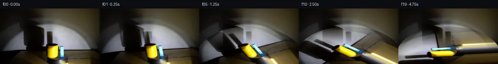
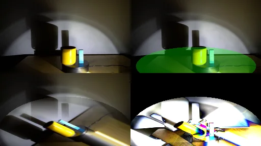
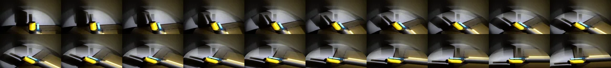

V0 · 初版 · 最终提交
![]()
Observable Generation Trace
把最终像素视频、Harness 冻结的每轮候选、真实工具事件和 Agent 自述放在同一页。可观测证据与模型自述分开标记，避免把“模型说它检查过”误当成真实工具调用。
![首帧]()
Static locked-off single-shot with fixed frame throughout filmed with constant framerate in real-time. The scene shows a realistic scientific demonstration. The scene only contains the described setup and actions. The yellow mug and the blue rectangular block sit on the black, clockwise-rotating platform, and the spotlight points toward the yellow mug and the block. The yellow mug and the blue rectangular block are rotating clockwise around the center of the black rotating platform, while the spotlight casts a large shadow on the wall behind it.
首帧显示在左侧播放器初始画面。Track 权限、隔离和 tensor 一致性来自 run manifest，而不是 METHOD.md。
默认勾选初版和最终版；可选其他版本一起同步播放。仅检查图更新的连续重复快照已合并，回退旧视频仍保留为一次修订。
Observable events
来源：events.jsonl + run manifest
此 Track 禁止读取输出图片。逐轮预览由外部 Harness 自动冻结，只用于事后审计，生成 Agent 当时看不到这些页面。
Frozen candidates
每张图来自该 round 的真实 00 / 01 / 05 / 10 / 19 帧

pixels c77e89866ec0b3e9 · code b2802ed99bce690c
--- previous/generate.py +++ current/generate.py @@ -0,0 +1,388 @@ +#!/usr/bin/env python3 +"""PixelWorld-Text: 20-frame generation for rotating platform scene. + +Method: Elliptical platform rotation with inverse bilinear sampling. +- The platform is modeled as a 3D circular disc viewed from an elevated angle, + projecting to an ellipse in the image. +- For each output frame, platform pixels are remapped by rotating in the + "circularized" platform coordinate space. +- Background (non-platform) region stays static from frame 00. +- A larger shadow ellipse captures wall shadow movement. +""" + +from PIL import Image +import numpy as np +import os, json, math + +# ── Paths ────────────────────────────────────────────────────────────── +WORKSPACE = os.path.dirname(os.path.abspath(__file__)) +FRAME0_PNG = os.path.join(WORKSPACE, "first_frame.png") +FRAMES_DIR = os.path.join(WORKSPACE, "frames") +TMP_DIR = os.path.join(WORKSPACE, ".tmp") +PIXELS_NPZ = os.path.join(WORKSPACE, "pixels.npz") +INSPECT_PNG= os.path.join(WORKSPACE, "inspection.png") +TRANS_CHECK= os.path.join(WORKSPACE, "transition_check.png") +INDEX_HTML = os.path.join(WORKSPACE, "index.html") +METHOD_MD = os.path.join(WORKSPACE, "METHOD.md") +GENERATE_PY= os.path.join(WORKSPACE, "generate.py") + +os.makedirs(FRAMES_DIR, exist_ok=True) +os.makedirs(TMP_DIR, exist_ok=True) + +# ── Parameters ───────────────────────────────────────────────────────── +H, W = 144, 256 +NUM_FRAMES = 20 +FPS = 4 + +# Platform ellipse (3D circular disc → 2D ellipse via elevation perspective) +PLATFORM_CX = 128.0 # center x +PLATFORM_CY = 130.0 # center y +PLATFORM_RX = 118.0 # semi-major (x) — full width ~236 px +PLATFORM_RY = 38.0 # semi-minor (y) — full height ~76 px + +# Shadow ellipse (larger, captures wall shadow above platform) +SHADOW_CX = 128.0 +SHADOW_CY = 120.0 +SHADOW_RX = 132.0 +SHADOW_RY = 72.0 + +# Rotation: 5° per frame clockwise, 95° total over 19 motion frames +DEG_PER_FRAME = 5.0 +RAD_PER_FRAME = math.radians(DEG_PER_FRAME) + +# ── Load reference frame ────────────────────────────────────────────── +ref_img = Image.open(FRAME0_PNG) +ref_arr = np.array(ref_img).astype(np.float32) # (H, W, 3) + +# ── Precompute: for each output pixel, is it in the static background? ─ +# Pixels outside the shadow ellipse are static (copied from frame 00). +# Pixels inside the shadow ellipse are rotated. +yy, xx = np.mgrid[0:H, 0:W].astype(np.float32) + +def ellipse_mask(cx, cy, rx, ry, margin=0.0): + """Return boolean mask for pixels inside ellipse (cx,cy,rx+margin,ry+margin).""" + return ((xx - cx) / (rx + margin))**2 + ((yy - cy) / (ry + margin))**2 <= 1.0 + +# Static mask: outside shadow ellipse +static_mask = ~ellipse_mask(SHADOW_CX, SHADOW_CY, SHADOW_RX, SHADOW_RY, margin=2.0) + +# ── Circularized coordinate helpers ──────────────────────────────────── +def img_to_circ(x, y, cx, cy, a, b): + """Map image (x,y) to circularized (u,v) where the ellipse maps to unit circle.""" + u = (x - cx) / a + v = (cy - y) / b # y increases downward, so negate for math convention + return u, v + +def circ_to_img(u, v, cx, cy, a, b): + """Map circularized (u,v) back to image (x,y).""" + x = cx + u * a + y = cy - v * b + return x, y + +# Bilinear sample from the reference array +def bilinear_sample(arr, x, y): + """Sample arr at float (x,y) with bilinear interpolation. Clamp edges.""" + x = np.clip(x, 0, W - 1.001) + y = np.clip(y, 0, H - 1.001) + x0 = np.floor(x).astype(int) … diff truncated; 301 more lines …
pixels c77e89866ec0b3e9 · code c43c7a3982e37e07
--- previous/generate.py
+++ current/generate.py
@@ -242,78 +242,62 @@
# ── index.html ─────────────────────────────────────────────────────────
print("Creating index.html...")
-# Read player template
+import base64 as b64
+
+# Read player template (uses __DATA__ and __ID__ placeholders)
template_path = os.path.join(WORKSPACE, "player_template.html")
-if os.path.exists(template_path):
- with open(template_path) as f:
- html = f.read()
-else:
- html = """<!DOCTYPE html>
-<html><head><meta charset="utf-8"><title>PixelWorld</title>
-<style>body{margin:0;background:#111;display:flex;justify-content:center;align-items:center;min-height:100vh}
-canvas{image-rendering:pixelated;max-width:100vw;max-height:100vh}
-.controls{position:fixed;bottom:20px;left:50%;transform:translateX(-50%);display:flex;gap:10px}
-button{padding:8px 16px;background:#333;color:#fff;border:1px solid #555;cursor:pointer;font-family:monospace}
-button:hover{background:#444}
-.slider{width:200px}
-#frameNum{color:#aaa;font-family:monospace;margin-left:10px}
-</style></head><body>
-<canvas id="c"></canvas>
-<div class="controls">
-<button id="playBtn">▶ Play</button>
-<button id="prevBtn">◀</button>
-<input type="range" id="slider" class="slider" min="0" max="19" value="0">
-<button id="nextBtn">▶</button>
-<span id="frameNum">0/19</span>
-</div>
-<script>
-const W=256,H=144,N=20;
-const frames=[FRAMES_DATA];
-const canvas=document.getElementById('c');
-canvas.width=W;canvas.height=H;
-const ctx=canvas.getContext('2d');
-let idx=0,playing=false,timer=null;
-function show(i){
-idx=Math.max(0,Math.min(N-1,i));
-const d=frames[idx];
-const img=new ImageData(new Uint8ClampedArray(d),W,H);
-ctx.putImageData(img,0,0);
-document.getElementById('slider').value=idx;
-document.getElementById('frameNum').textContent=idx+'/'+(N-1);
+with open(template_path) as f:
+ html = f.read()
+
+# Build DATA object for the template
+# First frame: base64 of uint32 array (flat, 36864 elements)
+first_bytes = pixels_uint32[0].flatten().tobytes()
+first_b64 = b64.b64encode(first_bytes).decode('ascii')
+
+# Deltas: frame-to-frame patches as [start, count, pixels...] uint32 arrays
+delta_b64_list = []
+for i in range(1, NUM_FRAMES):
+ prev = pixels_uint32[i-1].flatten()
+ curr = pixels_uint32[i].flatten()
+ diff_mask = prev != curr
+ diff_indices = np.where(diff_mask)[0]
+
+ # Group consecutive indices into runs
+ patch_entries = []
+ if len(diff_indices) > 0:
+ run_start = diff_indices[0]
+ run_len = 1
+ for j in range(1, len(diff_indices)):
+ if diff_indices[j] == diff_indices[j-1] + 1:
+ run_len += 1
+ else:
+ patch_entries.append(int(run_start))
+ patch_entries.append(run_len)
+ for k in range(run_len):
+ patch_entries.append(int(curr[run_start + k]))
+ run_start = diff_indices[j]
+ run_len = 1
+ patch_entries.append(int(run_start))
+ patch_entries.append(run_len)
+ for k in range(run_len):
+ patch_entries.append(int(curr[run_start + k]))
+
+ patch_arr = np.array(patch_entries, dtype=np.uint32)
+ delta_b64_list.append(b64.b64encode(patch_arr.tobytes()).decode('ascii'))
+
+data_obj = {
+ "first": first_b64,
+ "deltas": delta_b64_list,
+ "caption": "Yellow mug and blue block on clockwise-rotating platform with spotlight shadow"
… diff truncated; 42 more lines …Final visual checks
Harness 保存的最终产物


Agent claims
以下文字由生成 Agent 撰写，不等同于工具证据
The scene shows a yellow mug and blue rectangular block on a black rotating platform (turntable), illuminated by a fixed spotlight. The platform rotates clockwise over 5 seconds (20 frames at 4 fps).
The 3D circular turntable is viewed from an elevated camera angle, projecting
to an ellipse in the 2D image. The ellipse parameters were measured from
first_frame.png:
For each frame k (k=1..19), the platform has rotated clockwise by k × 5°.
The rotation is implemented via inverse mapping:
Map output pixel coordinates (x, y) to circularized space (u, v) by normalizing by the ellipse semi-axes:
Rotate (u, v) backward by the accumulated angle to find the source coordinates in frame 00:
Map back to image coordinates and bilinear-sample from frame 00.
The elliptical coordinate transform is the 2D projection of a rigid 3D rotation of a circular disc. Clockwise rotation of the disc means objects on the right side of the platform move toward the camera (downward in image) and then to the left. This preserves the parallax and perspective appearance of the physical setup.
generate.py — main generation script (this method)first_frame.png — input reference frameframes/00.png–19.png — output framespixels.npz — uint32 0xRRGGBB tensor of all framesinspection.png — diagnostic visualizationtransition_check.png — frame-to-frame transition checkindex.html — in-browser playerOBSERVATION.md — scene measurements and planMETHOD.md — this file